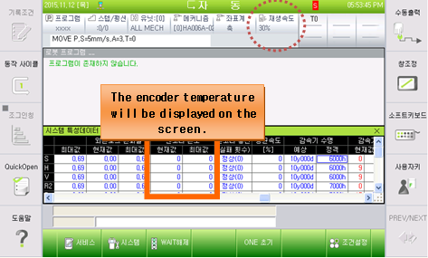

Previous error code: E0117 (¡Û axis) Position deviation set value exceeded
1.1.76.1. Outline
Position (speed) deviation exceeds the set value. If the difference between the location of moving command and the actual location is too large during the operation of robot that controlled by the servo, the servo board will detect an error (during servo operation) and immobilize the robot.
This error will occur when the position deviation is large and the encoder temperature is low.
In normal low temperatures (encoder, 5¡É or lower), additional torque is required, as compared with normal conditions, because the friction element increases due to the viscosity of grease. Operating the robot at a high speed in this condition could cause this error.
1.1.76.2. Causes and examine methods
|
(1) Drive the robot at a low speed (30% of the playback speed or lower) until the encoder temperature reaches the normal value (about 15¡É or higher). |
(1) Drive the robot at a low speed (30% of the playback speed or lower) until the encoder temperature reaches the normal value (about 15¡É or higher).
